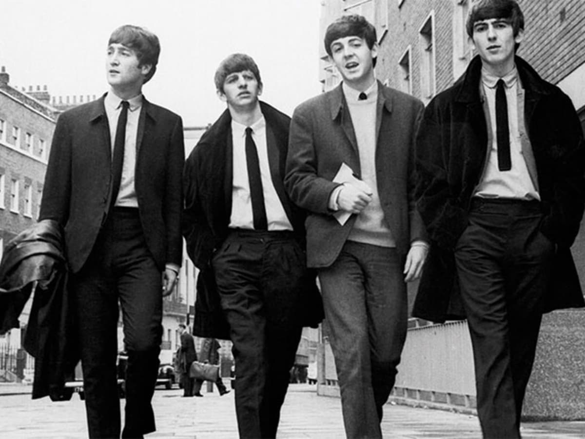
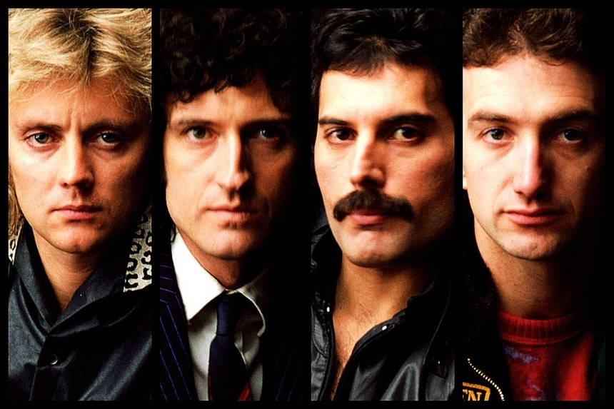
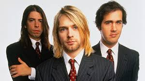

50-60 70-80 90-2000 Subgêneros
Origens do Rock
O rock and roll surgiu no Estados Unidos na década de 1950, com raízes no blue, rhythm and blues e
country music.
- Alguns dos primeiros artistas de rock incluem Chuck Berry, Elvis Presley e Little Richard.
- O rock and roll rapidamente se tornou popular entre os jovens, que se identificavam com sua
energia e rebeldia.
O Rock no anos 50 e 60
Nos anos 50 e 60, o rock passou por diversas mudanças e evoluções.

The Beatles
O Rock no anos 70 e 80
Nos anos 70 e 80, o rock se tornou mais diversificado e experimental.

Queen
O Rock no anos 90 e 2000
Nos anos 90 e 2000, o rock continuou a se diversificar e novos subgêneros surgiram.

Nirvana
O Rock na Atualidade
O rock continua a ser um gênero popular e influente na música.
Saiba mais sobre a história do rock na Wikipedia
Voltar para o início